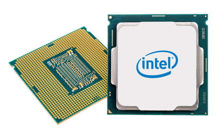
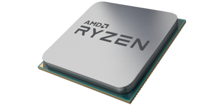

-
INICIO
-
Celulares
-
Categorias
-
Tipo
-
Iniciar sesión

INTEL CORE i7
- El procesador Core i7-7700 Quad-Core de Intel tiene una velocidad de reloj base de 3.6 GHz y viene con características como Intel Turbo Boost 2.0 y la tecnología Hyper-Threading de Intel. Con la tecnología Intel Turbo Boost 2.0, la máxima frecuencia de turbo que este procesador puede alcanzar es de 4.2 GHz

Ryzen 5
- En la familia Ryzen 5 el modelo estrella es el Ryzen 5 1600X, chip que ofrece seis núcleos y 12 hilos con una frecuencia base de 3.6 Ghz y modo Boost de 4 Ghz. Su rival directo por precio parece la serie 7000 de los Core i5 de Intel, aunque en el caso de Intel ni son modelos de 6 núcleos ni con varios hilos por núcleo. Para encontrar modelos con hasta 8 hilos hay que subir a la gama por encima de los 300 euros, con los Core i7 4/8.
Si nos centramos en el Core i5 7600k recién llegado al mercado, este chip ofrece cuatro núcleos (y 4 hilos) a una frecuencia base de 3.8 Ghz y Turbo de 4 Ghz, todo por unos 250 euros. Según AMD, aportando datos de Cinebench R15, su Ryzen 5 1600X supera a este Core i5 de precio similar en un 69%.